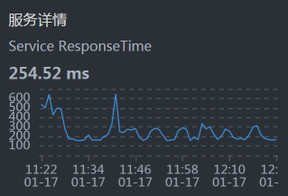

- 00 开篇词 打破四大认知局限，进阶高级性能工程师.md.html
- 01 性能工程：为什么很多性能测试人员无法对性能结果负责？.md.html
- 02 关键概念：性能指标和场景的确定.md.html
- 03 核心分析逻辑：所有的性能分析，靠这七步都能搞定.md.html
- 04 如何构建性能分析决策树和查找瓶颈证据链？.md.html
- 05 性能方案：你的方案是否还停留在形式上？.md.html
- 06 如何抽取出符合真实业务场景的业务模型？.md.html
- 07 性能场景的数据到底应该做成什么样子？.md.html
- 08 并发、在线和TPS到底是什么关系？.md.html
- 09 如何设计全局和定向监控策略？.md.html
- 10 设计基准场景需要注意哪些关键点？.md.html
- 11 打开首页之一：一个案例，带你搞懂基础硬件设施的性能问题.md.html
- 12 打开首页之二：如何平衡利用硬件资源？.md.html
- 13 用户登录：怎么判断线程中的Block原因？.md.html
- 14 用户信息查询：如何解决网络软中断瓶颈问题？.md.html
- 15 查询商品：资源不足有哪些性能表现？.md.html
- 16 商品加入购物车：SQL优化和压力工具中的参数分析.md.html
- 17 查询购物车：为什么铺底参数一定要符合真实业务特性？.md.html
- 18 购物车信息确定订单：为什么动态参数化逻辑非常重要？.md.html
- 19 生成订单信息之一：应用JDBC池优化和内存溢出分析.md.html
- 20 生成订单信息之二：业务逻辑复杂，怎么做性能优化？.md.html
- 21 支付前查询订单列表：如何分析优化一个固定的技术组件？.md.html
- 22 支付订单信息：如何高效解决for循环产生的内存溢出？.md.html
- 23 决定容量场景成败的关键因素有哪些？.md.html
- 24 容量场景之一：索引优化和Kubernetes资源分配不均衡怎么办？.md.html
- 25 容量场景之二：缓存对性能会有什么样的影响？.md.html
- 26 稳定性场景之一：怎样搞定业务积累量产生的瓶颈问题？.md.html
- 27 稳定性场景之二：怎样搞定磁盘不足产生的瓶颈问题？.md.html
- 28 如何确定异常场景的范围和设计逻辑？.md.html
- 29 异常场景：如何模拟不同组件层级的异常？.md.html
- 30 如何确定生产系统配置？.md.html
- 31 怎么写出有价值的性能报告？.md.html
- 我们这个课程的系统是怎么搭建起来的？.md.html
- 结束语 做真正的性能项目.md.html
- 捐赠
18 购物车信息确定订单：为什么动态参数化逻辑非常重要？
你好，我是高楼。
我们今天来看一下购物车信息确定订单这个接口的性能怎么样，有哪些需要优化的地方。
在这节课中，我将给你展示如何进行方法级的跟踪，来判断参数的问题。而这个参数，并不是我们这个接口直接用到的，它有不同的使用层次。
直接的参数化我们都能理解，对吧。但是当一个参数产生新的数据，而新的数据又会在后续的动作中用到时，你就得注意了，因为我们有可能在第一层数据中没有发现问题，但是在后续的动作中会遇到问题。所以，我们一定要关注参数化的变化，也就是动态的参数化的数据。
此外，在这节课中，我还将带你一起来看看在应用有多个节点的情况下，某个节点消耗资源过多导致的复杂问题该怎么处理。
话不多说，我们开始今天的分析吧！
场景运行数据
对于购物车信息确定订单这个接口，我们第一次运行的性能场景结果如下：
在图中，响应时间随着压力的增加而增加，而TPS只到了160多，还是有点低了，我们现在就得考虑把TPS提升。
注意，这是一个典型的TPS不高，响应时间不断增加的性能问题。
按照RESAR性能分析逻辑，我们看一下这个接口的架构图。
看架构图

可以看到，这个接口涉及到的服务比较多，架构图也比之前其他接口的要复杂一些。
紧接着，我们就来拆分响应时间。
拆分响应时间
- Gateway：
- Order：

- Member：

- Cart：

- Portal：

从上面的时间拆分来看，Cart消耗了最长的时间。所以，我们先分析Cart。
我们再顺手点一下Cart和MySQL之间的时间消耗，看看是什么情况：

这个Cart和MySQL之间的时间看起来不长，那我们就不用考虑数据库的SQL时间消耗了。
接下来，我们就来分析响应时间长的Cart服务。
第一阶段
全局分析
按照惯例，我们来看一下worker层面的资源消耗情况：

从上图来看，worker-3上消耗的资源较多。那我们就来查看一下worker-3上有什么服务。
[root@k8s-master-2 ~]# kubectl get pods -o wide | grep k8s-worker-3
cloud-nacos-registry-685b8957d7-vskb6 1/1 Running 0 2d11h 10.100.69.199 k8s-worker-3 <none> <none>
cloud-redis-7f7db7f45c-t5g46 2/2 Running 0 2d8h 10.100.69.196 k8s-worker-3 <none> <none>
elasticsearch-master-2 1/1 Running 0 3h28m 10.100.69.209 k8s-worker-3 <none> <none>
svc-mall-cart-558d787dc7-g6qgh 1/1 Running 0 2d11h 10.100.69.201 k8s-worker-3 <none> <none>
svc-mall-order-fbfd8b57c-kbczh 1/1 Running 0 2d11h 10.100.69.202 k8s-worker-3 <none> <none>
svc-mall-portal-846d9994f8-m7jbq 1/1 Running 0 38h 10.100.69.207 k8s-worker-3 <none> <none>
svc-mall-search-c9c8bc847-h7sgv 1/1 Running 0 161m 10.100.69.210 k8s-worker-3 <none> <none>
[root@k8s-master-2 ~]#
可以看到，worker-3上有8个服务，哪个服务消耗的资源最多呢？现在我们进入worker-3，查看下top：
[root@k8s-worker-3 ~]# top
top - 01:51:35 up 2 days, 12:18, 2 users, load average: 19.48, 18.40, 17.07
Tasks: 319 total, 1 running, 318 sleeping, 0 stopped, 0 zombie
%Cpu0 : 68.6 us, 6.4 sy, 0.0 ni, 19.9 id, 0.0 wa, 0.0 hi, 5.1 si, 0.0 st
%Cpu1 : 66.7 us, 5.8 sy, 0.0 ni, 22.8 id, 0.0 wa, 0.0 hi, 4.8 si, 0.0 st
%Cpu2 : 66.4 us, 6.1 sy, 0.0 ni, 22.7 id, 0.0 wa, 0.0 hi, 4.7 si, 0.0 st
%Cpu3 : 65.7 us, 5.4 sy, 0.0 ni, 23.6 id, 0.0 wa, 0.0 hi, 5.4 si, 0.0 st
%Cpu4 : 66.6 us, 5.7 sy, 0.0 ni, 22.0 id, 0.0 wa, 0.0 hi, 5.7 si, 0.0 st
%Cpu5 : 67.6 us, 5.8 sy, 0.0 ni, 22.5 id, 0.0 wa, 0.0 hi, 4.1 si, 0.0 st
KiB Mem : 16265992 total, 2525940 free, 7015104 used, 6724948 buff/cache
KiB Swap: 0 total, 0 free, 0 used. 8848464 avail Mem
PID USER PR NI VIRT RES SHR S %CPU %MEM TIME+ COMMAND
32216 root 20 0 8878548 658820 16980 S 280.5 4.1 375:31.82 java -Dapp.id=svc-mall-cart -javaagent:/opt/skywalking/agent/skywalking-agen+
32589 root 20 0 8839408 589196 15892 S 84.1 3.6 171:16.88 java -Dapp.id=svc-mall-order -javaagent:/opt/skywalking/agent/skywalking-age+
24119 root 20 0 8798548 549804 15892 S 65.9 3.4 115:52.74 java -Dapp.id=svc-mall-portal -javaagent:/opt/skywalking/agent/skywalking-ag+
1089 root 20 0 2438956 105708 37776 S 6.3 0.6 248:21.71 /usr/bin/kubelet --bootstrap-kubeconfig=/etc/kubernetes/bootstrap-kubelet.co+
5470 root 20 0 1154816 14992 1816 S 3.6 0.1 20:15.93 redis-server 0.0.0.0:6379
从以上数据来看，的确是Cart服务消耗的CPU比较高。不过，它还没有把6个CPU都用完，这一点我们要记一下。
下面开始定向分析。
定向分析
既然Cart服务消耗的CPU多，那我们当然要看一下Cart中的线程都在干啥。

这些线程状态基本都在绿色的Runnable状态，看起来都比较繁忙，有可能是因为线程数配置的太低了，我们查看下配置：
server:
port: 8086
tomcat:
accept-count: 1000
threads:
max: 20
min-spare: 5
max-connections: 500
知道了Spring Boot内置的Tomcat线程数配置，我们拆分一下在Cart上正在执行的方法，看看我们的定位方法是不是合理：

看这张图的时候，你要注意消耗时间长的位置，也就是图中右侧线段比较长的地方。这里面有两个环节的问题：
- MySQL的执行时间长。你要注意哦，虽然这里的MySQL/JDBI/PreparedStatement/execute并没有消耗很长的时间，但是它的下一步Balance/Promotion/Cart/CartPromotion消耗的时间是长的；
- Promotionnew方法本身的时间长。
由于慢的节点和MySQL有关，我们创建一个，mysqlreport来看MySQL整体的监控数据：
__ Connections _________________________________________________________
Max used 152 of 151 %Max: 100.66
Total 540 0.0/s
原来是连接用完了！我们赶紧改一下，从151改到500。
不过，重测之后响应时间还是没有变化，那我们就只能接着跟踪Cart上的方法了。
方法级跟踪
于是，我们不得不来到方法级跟踪， 看一下我们关注的方法Promotionnew慢在哪里。
由上面那张调用视图，我们可以编写下面这样的跟踪语句：
trace -E com.dunshan.mall.cart.controller.CartItemController listPromotionnew -n 5 -v –skipJDKMethod false ‘1==1’
然后得到了下面这个结果：
`---ts=2021-01-16 15:08:58;thread_name=http-nio-8086-exec-34;id=f8;is_daemon=true;priority=5;TCCL=org.springframework.boot.web.embedded.tomcat.TomcatEmbeddedWebappClassLoader@56887c8f
`---[97.827186ms] com.dunshan.mall.cart.service.imp.CartItemServiceImpl$$EnhancerBySpringCGLIB$$ac8f5a97:listPromotion()
`---[97.750962ms] org.springframework.cglib.proxy.MethodInterceptor:intercept() #57
`---[97.557484ms] com.dunshan.mall.cart.service.imp.CartItemServiceImpl:listPromotion()
+---[72.273747ms] com.dunshan.mall.cart.service.imp.CartItemServiceImpl:list() #166
+---[0.003516ms] cn.hutool.core.collection.CollUtil:isNotEmpty() #172
+---[0.004207ms] java.util.List:stream() #173
+---[0.003893ms] java.util.stream.Stream:filter() #57
+---[0.003018ms] java.util.stream.Collectors:toList() #57
+---[0.060052ms] java.util.stream.Stream:collect() #57
+---[0.002017ms] java.util.ArrayList:<init>() #177
+---[0.003013ms] org.springframework.util.CollectionUtils:isEmpty() #179
`---[25.152532ms] com.dunshan.mall.cart.feign.CartPromotionService:calcCartPromotion() #181
可以看到，在我们跟踪的方法com.dunshan.mall.cart.service.imp.CartItemServiceImpl:listPromotion()中，有两处listPromotion和calcCartPromotion时间消耗较大，分别是：
- com.dunshan.mall.cart.service.imp.CartItemServiceImpl:list()
- com.dunshan.mall.cart.feign.CartPromotionService:calcCartPromotion()
跟踪List函数
我们在Arthas中执行trace跟踪语句如下：
trace com.dunshan.mall.cart.service.imp.CartItemServiceImpl list -v -n 5 --skipJDKMethod false '1==1'
然后得到这样的结果：
`---ts=2021-01-16 15:19:45;thread_name=http-nio-8086-exec-65;id=23ce;is_daemon=true;priority=5;TCCL=org.springframework.boot.web.embedded.tomcat.TomcatEmbeddedWebappClassLoader@56887c8f
`---[70.158793ms] com.dunshan.mall.cart.service.imp.CartItemServiceImpl:list()
+---[0.003501ms] com.dunshan.mall.model.OmsCartItemExample:<init>() #150
+---[0.002642ms] com.dunshan.mall.model.OmsCartItemExample:createCriteria() #151
+---[0.002932ms] com.dunshan.mall.model.OmsCartItemExample$Criteria:andDeleteStatusEqualTo() #57
+---[0.00304ms] com.dunshan.mall.model.OmsCartItemExample$Criteria:andMemberIdEqualTo() #57
`---[70.078976ms] com.dunshan.mall.mapper.OmsCartItemMapper:selectByExample() #152
在一阵无聊的trace之后，看到一个select语句消耗时间较长，这个select语句是：
select id, product_id, product_sku_id, member_id, quantity, price, product_pic, product_name, product_sub_title, product_sku_code, member_nickname, create_date, modify_date, delete_status, product_category_id, product_brand, product_sn, product_attr from oms_cart_item WHERE ( delete_status = ? and member_id = ? )
一个简单的select语句，怎么会耗时这么久呢？我们先不管为什么会这样，先来看看这个oms_cart_item的数据有多少。我连上数据库后一查，发现在oms_cart_item里面有10612条数据，这个数据量并不大。
此外，我还查看了一下索引，也是有的，并且执行计划也走到了索引这里。那为什么会慢呢？到这里，我们得考虑一下是不是和数据量有关了。所以，我们来看看这个select语句究竟查出了多少条数据。
在我补全SQL后一查，发现一个member_id对应500多条记录，这是一个人一次买了500个东西？
既然在购物车信息里，同一个人有这么多记录，那一定是在商品加入购物车时加进去的。而要往一个人的购物车里加东西，显然是在性能脚本执行的过程中添加，因为每个用户的购物车一开始都是空的。所以，我们要去查一下商品加入购物车的脚本是怎么回事。
商品加入购物车的脚本很简单，就是一个post，加上商品ID，在HTTP协议的请求头里面有一个Token来标识是哪个用户。
在这里，我们要查的就是token有没有用重，JMeter中的Token参数化配置如下：

看起来挺好，我们在这里设计了不重用数据，所以在设置上Token不会被重用。那么，只有一种可能，就是Token重了。


在随机检查了几条Token之后，我发现有大量的Token重复。这也就解释了，为什么我们会在一个人的购物车里看到那么多商品数据。
可是，这个逻辑就有问题了。你想想，我们设置了参数化中数据不重复使用，但实际上确实有大量的Token被重用，这就说明Token的参数化文件本身就重复了。
那怎么办呢？我们只有把所有的Token全部清掉，让Token数据在商品加入购物车的时候不会被重用，以此来避免在一个人的购物车中加入太多商品的情况。
接着怎么办？只有一招了，就是把所有的数据都清掉，然后用所有的用户创建合理的购物车数据。于是，我在这里又花了几个小时，造出了130多万数据。现在，我们再回归一下场景：

你看，TPS增加到了300！
本来这是一个美好到可以喝下午茶的结果，然而……天不随人愿，我在场景持续执行的过程中，又发现了问题，这让我们不得不开启第二阶段的分析。
第二阶段
场景运行数据
是什么问题呢？我在压力运行的数据中，竟然看到了这种TPS曲线：
你看，TPS相当规律地往下掉，不仅会掉下去，而且还会恢复回去，形成一个明显的锯齿状，并且这锯齿还挺大。
怎么办？根据高老师的思路，现在我们就得按照RESAR性能分析逻辑来收拾这个问题了。我们在前面已经看过架构图，所以，现在直接来拆分响应时间。
拆分响应时间
- Gateway：

- Order：

- Cart：
- Portal：
从上面的数据来看，似乎每一层都有时间消耗，性能都不怎么样。
全局分析
那我们就查看下当前的全局监控数据，可以看到worker-3上的CPU消耗最多：

因此，我们来查一下worker-3上有哪些Pod：
[root@k8s-master-3 ~]# kubectl get pods -o wide | grep k8s-worker-3
cloud-nacos-registry-685b8957d7-vskb6 1/1 Running 0 3d7h 10.100.69.199 k8s-worker-3 <none> <none>
cloud-redis-7f7db7f45c-t5g46 2/2 Running 1 3d4h 10.100.69.196 k8s-worker-3 <none> <none>
elasticsearch-master-2 1/1 Running 0 23h 10.100.69.209 k8s-worker-3 <none> <none>
svc-mall-cart-79c667bf56-j76h6 1/1 Running 0 20h 10.100.69.213 k8s-worker-3 <none> <none>
svc-mall-order-fbfd8b57c-kbczh 1/1 Running 0 3d7h 10.100.69.202 k8s-worker-3 <none> <none>
svc-mall-portal-846d9994f8-m7jbq 1/1 Running 0 2d10h 10.100.69.207 k8s-worker-3 <none> <none>
svc-mall-search-c9c8bc847-h7sgv 1/1 Running 0 23h 10.100.69.210 k8s-worker-3 <none> <none>
[root@k8s-master-3 ~]#
居然有这么多服务都在worker-3上。
我们现在登录到worker-3上，看一下top资源。其实，我在这里主要想看的是process table，因为我想先确定一下哪个服务消耗的资源最高，然后再决定收拾哪个服务。
[root@k8s-worker-3 ~]# top
top - 22:13:01 up 3 days, 8:39, 3 users, load average: 40.34, 30.03, 18.02
Tasks: 326 total, 6 running, 320 sleeping, 0 stopped, 0 zombie
%Cpu0 : 74.5 us, 13.4 sy, 0.0 ni, 7.7 id, 0.0 wa, 0.0 hi, 4.4 si, 0.0 st
%Cpu1 : 66.3 us, 12.1 sy, 0.0 ni, 16.5 id, 0.0 wa, 0.0 hi, 4.7 si, 0.3 st
%Cpu2 : 49.7 us, 32.4 sy, 0.0 ni, 14.9 id, 0.0 wa, 0.0 hi, 2.7 si, 0.3 st
%Cpu3 : 73.2 us, 9.7 sy, 0.0 ni, 12.4 id, 0.0 wa, 0.0 hi, 4.7 si, 0.0 st
%Cpu4 : 76.4 us, 10.5 sy, 0.0 ni, 8.8 id, 0.0 wa, 0.0 hi, 4.1 si, 0.3 st
%Cpu5 : 62.4 us, 16.4 sy, 0.0 ni, 16.1 id, 0.0 wa, 0.0 hi, 4.7 si, 0.3 st
KiB Mem : 16265992 total, 211212 free, 9204800 used, 6849980 buff/cache
KiB Swap: 0 total, 0 free, 0 used. 6650068 avail Mem
PID USER PR NI VIRT RES SHR S %CPU %MEM TIME+ COMMAND
32485 root 20 0 8895760 700564 16896 S 101.6 4.3 723:03.52 java -Dapp.id=svc-mall-cart -javaagent:/opt/skywalking/agent/skywalking-agent.jar -Dskywalking.agent.service_name=svc-ma+
32589 root 20 0 8845576 778684 15896 S 93.6 4.8 427:04.44 java -Dapp.id=svc-mall-order -javaagent:/opt/skywalking/agent/skywalking-agent.jar -Dskywalking.agent.service_name=svc-m+
24119 root 20 0 8825208 600956 15888 S 67.9 3.7 262:00.83 java -Dapp.id=svc-mall-portal -javaagent:/opt/skywalking/agent/skywalking-agent.jar -Dskywalking.agent.service_name=svc-+
............
在上述top资源中，我们主要来看几个吃CPU的大户。不难发现，Cart/Order/Portal这三个服务在购物车信息确定订单的业务中都有用到，并且都在同一个worker上。同时，我们也可以看到，在这个6C的worker中，现在的CPU队列已经达到40了。
定向分析
从系统上来看，CPU队列长的问题主要是由于资源的争用，因为线程在不断地唤醒，通过start_thread就能看出来：

现在我们要做的就是把线程降下去。
怎么降呢？有两种手段：
- 把服务移走，先一个个收拾，分而治之。
- 把服务的线程减少。
这两种方式都是能减少资源争用，但是会带来不同的影响。其中，第一种手段比较合理，只是会消耗更多的整体资源；第二种手段虽然会减少争用，但是会导致响应时间增加。
我这么跟你一讲，你可能已经发现了，这两种手段都不能解释TPS不稳定的问题。那为什么TPS一会儿掉下去，一会儿又恢复呢？现在我们还不知道答案，不过基于我们“全局-定向”的分析思路，我们先看一下worker-3的资源消耗：

在同一时间段，我也查看了同一台物理机上的其他worker的资源消耗情况，发现worker-8的资源消耗有点不太正常。请你注意，我此时的查看逻辑，仍然依据的是第3讲中描述的逻辑，以及对应第4讲中的性能分析决策树。希望你不要觉得这里有跳跃，实际上我们还是在全局监控的第一层计数器上。
我们具体来看一下worker-8的资源消耗：
再来看一下压力场景的执行数据：
从上面worker-8的资源使用率来看，确实有很高的时候。考虑到同一物理机上资源的争用问题，我们现在把cart移到Worker-7上去，把order移到worker-9上去，再来看TPS：

花花绿绿，起起伏伏，真是好看……我们先不管这样做有没有增加TPS，光看这个趋势，就足以让人心碎了。既然结果还是这样，那我们就用老套路，继续拆分时间来看看。
- Gateway：

- Order：
- Cart：
- Portal：

- Member：

从上面的时间来看，Gateway消耗的时间比较长，这就奇怪了，这都换了到了Gateway服务上有问题了。所以，我们到Gateway机器上看一下到底有哪些服务：
呀呀呀，那个占第一位的是个啥？原来是ES的一个进程，这个进程消耗了多个CPU。看到这，我想起来前几天为了增加ES的能力，我们给ES data和ES client增加过CPU。当时考虑到它们都是吃CPU的大户，只能用一个CPU实在太委屈它们了，所以增加了CPU数量，想让它们的性能好一些。
可是没想到，ES data和ES client对应用的影响有这么大。
我当时改ES的CPU，是因为我们架构中的一个搜索服务用到了它，而当时的CPU给的是一个C，这导致Search服务的TPS很低。关于这一点，我在第15讲中有描述，你如果不清楚，可以再看看。
同时，我们还要注意一点，ES data和ES client都不是单一的节点，而是有几个节点。由此产生的问题就是，任意一个ES节点出现资源消耗过多的时候，都会影响到它所在的worker机器资源，进而影响到这个ES节点所在的整个物理机。
既然ES的进程消耗资源占居首位，那我们该怎么办呢？为了验证问题，我先把ES给停掉，看看TPS能不能上来，如果能上来，我们再考虑怎么限制ES的资源。
停了ES之后，TPS如下图所示：
看到没有？TPS增加了一倍，并且也没有掉下来！非常理想！
所以，接下来，我们就要考虑把ES限制到固定的worker上，让它不影响现在的应用。
总结
在这节课中，我们有两个阶段的分析。
在第一个阶段中，我们定位了数据问题。对于性能来说，数据是非常重要的基础资源，而数据的合理性直接影响了测试的结果。
经常有初入性能行业的人讨论：性能脚本中的数据到底应该用多少？我觉得这是一个非常明确的问题，在所有的性能场景中，使用的资源都应该按真实发生的业务逻辑来确定，有且只有这样，才能保证结果是有效的。
在第二阶段中，我们定位了一个有意思的问题，而这个问题的复杂性在于整体的架构。因为我们是用KVM、Kubernetes和Docker作为基础设施的，而我们选择的应用原本也不是真正的微服务，是对一个开源系统架构做了更改，把它改成了真正的微服务。
在这样的环境中，如果一个应用有问题，那在修改重启的时候，应用会被Kubernetes调度到哪个节点上，是不确定的。也正是出于这样的原因，我们一会儿看到这里有问题，一会儿看到那里有问题，定位的逻辑全都对，但是就是层面不对。这也是上节课中随机问题出现的原因。
所以，根据我们在第4讲中提到的性能分析决策树，我们仍然需要有全局监控、定向监控的思路，并且还要找到计数器的相关性。这样一来，当看到相关计数器有问题的时候，我们就能知道它们之间的关联关系了。
希望你在这节课中，能把性能分析的逻辑记在心中。
课后作业
最后，请你思考一下：
- 性能脚本中的参数应该如何设计？
- 如何定位TPS会掉下来的情况？大概描述一下你的思路。
记得在留言区和我讨论、交流你的想法，每一次思考都会让你更进一步。
如果你读完这篇文章有所收获，也欢迎你分享给你的朋友，共同学习进步。我们下这节课再见！
© 2019 - 2023 Liangliang Lee. Powered by gin and hexo-theme-book.